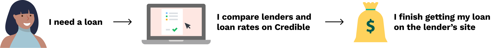
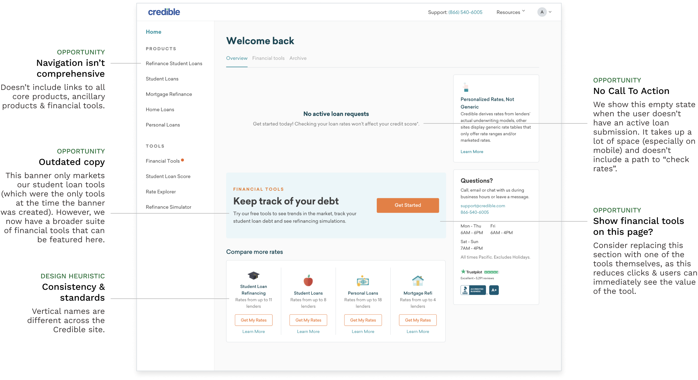
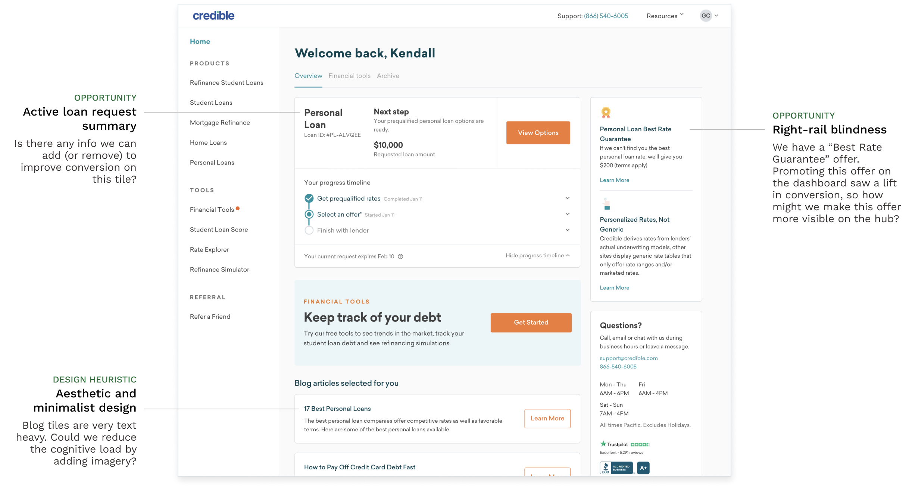
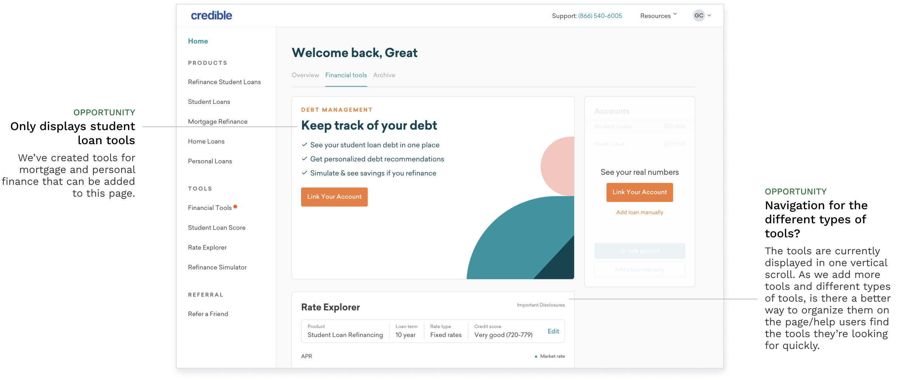
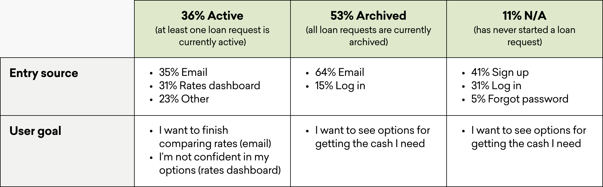
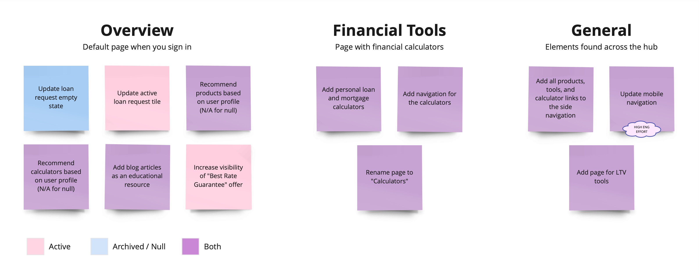
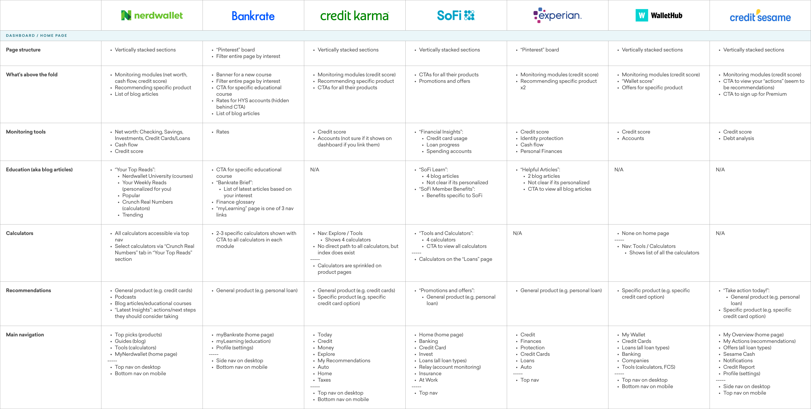
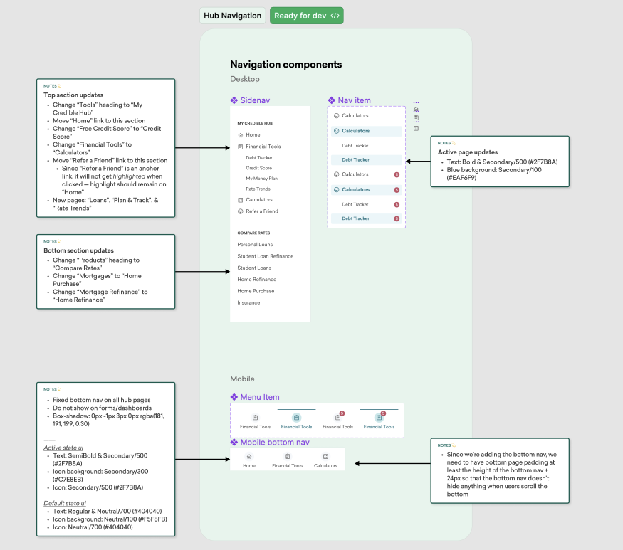

Credible Hub
Personalized financial hub
Responsibilities
Research
Wireframing
Prototyping
User Testing
Team
7 engineers
1 product manager
1 user researcher

Credible is an online marketplace for comparing personalized loan rates
from multiple lenders, all in one place. Once a user selects the loan they
want, they are sent to the lender's site to finalize the offer — marking the
end point for many users' journies on Credible.

Problem
As part of the lifetime value (retention) team, one of our OKRs is to evolve
Credible’s transactional relationship with customers to that of a long-term
relationship. For this initiative, our marketers plan to increase the volume
of emails they send to people after they get a loan. These emails will lead
users back to Credible's hub (logged in experience), but the current hub
is barebone & lacks direction and usefulness for progressing one's financial
goals/needs. For this reason, the product team was tasked with improving the
Credible hub.
Evaluating the current hub
I started this project by looking at the ui/ux of our current hub to identify
pain points and areas for opportunity. This helped me gain a deeper understanding
of the problem space and aid discussion of project goals with my PM.

Pain Points
Overview for archived users

Overview for active users

Financial Tools

Who is using the hub?
ROUGH OMG: Basically want to explain that we looked the different subset
of users on the hub and prioritized optimization for who's using the hub
the most. Wanted to focus project goals on the users who are on the hub
the most

Ideation & Prioritization
ROUGH OMG: Thinking about previous user research, customer goals, pain points, business objectives, and scope my PM and I defined a set of project goals.

ROUGH OMG: Should probably include some sort of mapping chart
Competitor Research
Before starting sketches, I looked at direct competitors, such as SoFi,
and other companies, like Credit Karma and Nerdwallet, that are in the personal
finance space but don't necessarily have a loans marketplace to get a sense of the landscape.

Page structure
Most sites have clearly labeled sections that include 3-4 products/modules
in them. Few sites show a mix of different modules displayed similar to
a “Pinterest” board.
What's above the fold?
Most include a snapshot of what the user is monitoring on the site
(e.g. credit score). CTAs to check out one of their products typically
follows.
Monitoring tools
1) Credit score 2) Account usage 3) Loan progress — Most aren’t
categorized with calculators. They have spots on the home page and
have their own designated pages.
Education
Big push from Nerdwallet and Bankrate (which focus more on helping
users learn about finance), but less prominent on other sites.
Calculators
Instead of directing users to a page with all their calculators, most
sites surface specific calculators where users would need them.
Recommendations
All sites encourage users to check out the different products they offer.
They vary in how personalized the messaging is and how specific the recommendation is
Main Navigation
Most links featured in the main navigation are goal oriented with links
like Finances, Loans, Tools, Invest, etc.
Handoff
